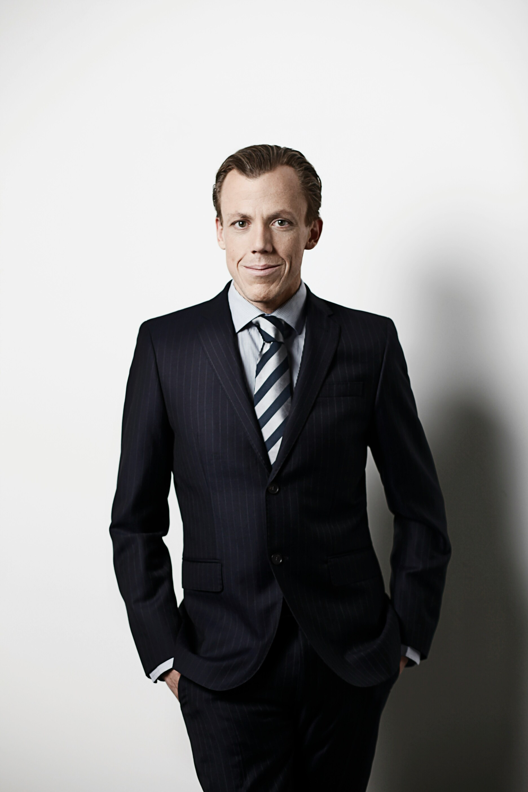

Ekonomi
Irma Nagy
2003
"För mig handlar ekonomi inte bara om siffror.. Det handlar om att skapa trygghet, struktur och hållbar utveckling för hela företaget"
Med ett starkt öga för detaljer och ett lugnt, analytiskt arbetssätt har hon blivit en central del av företagets stabilitet och tillväxt. Hennes arbete bakom kulisserna skapar förutsättningar för både struktur, långsiktig planering och fortsatt utveckling.
Assistent
Sandra Pterov
1999
"Jag tror att de bästa resultaten skapas genom struktur, kommunikation och ett genuint engagemang i människorna omkring oss."
Inifrån företaget har Sandra varit en viktig del av att skapa stabilitet, struktur och en positiv energi i det dagliga arbetet. Genom sitt engagemang och sitt sätt att alltid hålla både team och processer samman har hon blivit en självklar del av företagets utveckling.
VD
Carl Nielsen
1978
"Vi bygger inte bara hemsidor. Vi bygger första intryck."

Resan började med en dator, stora idéer och viljan att skapa något eget. Genom hårt arbete och passion för att hjäpa företag växte Korporate fram med målet att hjälpa företag bygga starka digitala varumärken.